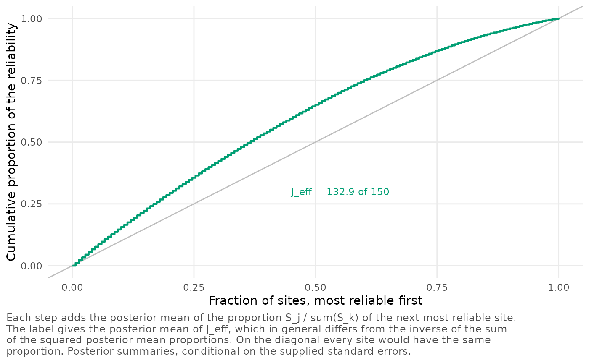
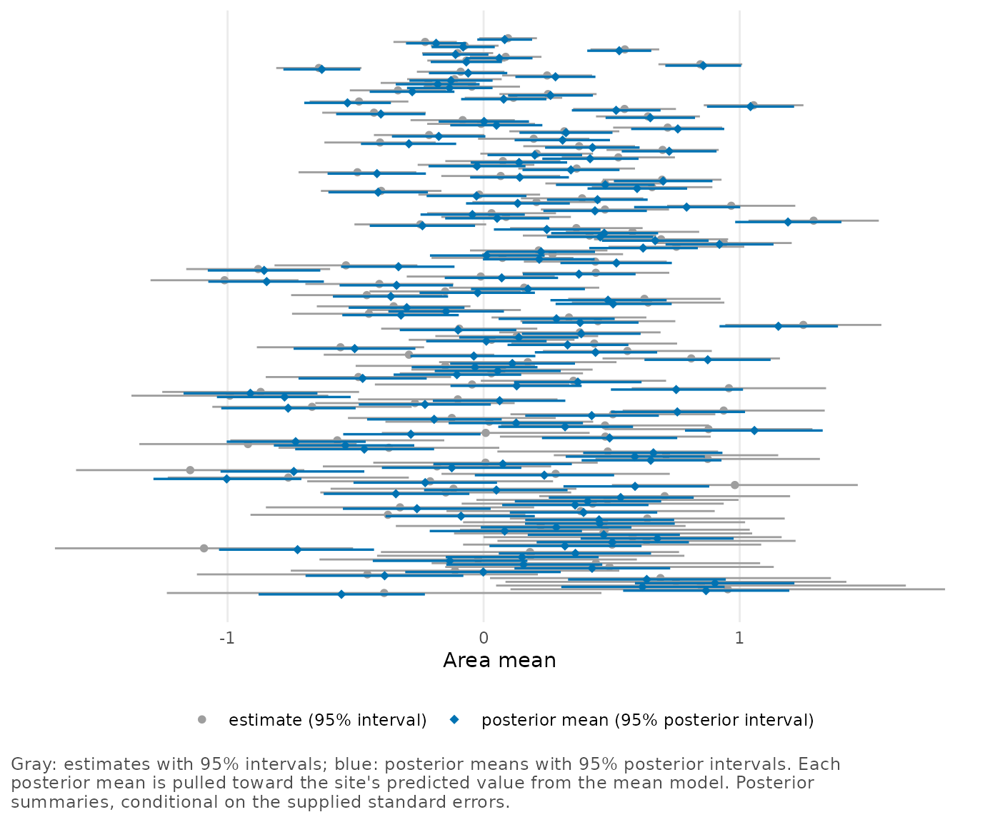

Small area estimation with a Fay-Herriot model
Source:vignettes/small-area-estimation.Rmd
small-area-estimation.RmdSmall area estimation often starts from a survey that gives a direct estimate for each area, such as a district or a county, with a variance computed from the survey design. In the area-level model of Fay and Herriot (1979), the direct estimates play the part of a multisite trial’s site estimates. Each direct estimate is normal around the area’s true value, with its sampling variance , and the true values are normal around a regression on area covariates, with variance . Under this model, the best linear unbiased predictor (BLUP) of an area’s true value pulls the direct estimate toward the regression prediction and keeps the weight
on the area’s own estimate. These weights are poolinfo’s site
reliabilities. In this vignette we compute their diagnostics for a set
of simulated areas under two mean models, and we set the posterior means
beside the empirical BLUP (EBLUP). We report the informativeness
,
the mean reliability
,
the dispersion
,
the logit variance
and the concentration count
of each fit, as vignette("poolinfo") defines them.
In the small area literature the same quantities go by other letters. Much of the Fay-Herriot literature writes for and for , and Rao and Molina (2015) write
- for , the variance of the true values around the regression;
- for , the sampling variance of area ’s direct estimate;
- for , the weight on the area’s direct estimate.
Simulated areas
We simulate areas whose survey samples differ widely in size. Each
direct estimate is a mean, with a design effect of 1.5 on its variance,
and the true area means depend on a covariate x, such as a
standardized measure of poverty from administrative records.
set.seed(20261014)
J <- 150
n <- pmax(8, round(exp(rnorm(J, log(60), 0.9))))
x <- rnorm(J)
truth <- 0.2 + 0.4 * x + rnorm(J, sd = 0.15)
se <- sqrt(1.5 / n)
areas <- data.frame(area = sprintf("A%03d", seq_len(J)), n = n, x = x,
estimate = rnorm(J, truth, se), se = se)
summary(areas$n)
#> Min. 1st Qu. Median Mean 3rd Qu. Max.
#> 8.00 30.25 63.50 81.01 107.00 453.00Across the 150 areas, samples range from 8 to 453 respondents, with a
median of 63.5. In a real application, estimate and
se would be each area’s direct estimate and its
design-based standard error. Like the analysis of a multisite trial, the
Fay-Herriot model treats the sampling variances as known, although they
are estimated from the same small samples. In practice the direct
variances are often smoothed first, for example with a generalized
variance function, before they enter the model (Rao and Molina
2015). Whatever noise the variances carry passes into the
diagnostics.
is the variance of the logarithms of the
,
so independent errors in the estimated variances tend to raise it, and
they spread the reliabilities further apart. Our simulation uses the
true variances, which stand in for smoothed ones.
A common mean and a regression mean
We fit the posterior twice, first with a common mean for all the
areas and then with the covariate in the mean, as in the Fay-Herriot
model. mean_model takes a one-sided formula, and its
variables are looked up in data.
common <- reliability_posterior(estimate, se = se, site = area, data = areas)
regression <- reliability_posterior(estimate, se = se, site = area,
data = areas, mean_model = ~ x)
compare_profiles(`common mean` = common, `mean model ~ x` = regression)
#> Comparison of 2 analyses
#> Intervals are central posterior intervals.
#> Each analysis is conditional on its own standard errors.
#>
#> analysis J informativeness I mean reliability
#> common mean 150 0.891 [0.864, 0.915] 0.864
#> mean model ~ x 150 0.532 [0.428, 0.629] 0.528
#>
#> analysis dispersion H concentration count J_eff
#> common mean 0.0378 [0.0309, 0.0451] 148.1
#> mean model ~ x 0.0850 [0.0813, 0.0859] 132.9With a common mean, the between-area standard deviation includes everything that the covariate explains. Its posterior mean is 0.467 and is 0.89, so the model would move an area with the geometric-mean standard error only about 11% of the way toward the common mean. With the covariate, is the standard deviation of the true values around the regression line, 0.174, and falls to 0.53. Because the Fay-Herriot predictor shrinks toward the regression prediction, the second profile is the one that describes it. When you report the diagnostics of an area-level model, report them for the mean model that your predictor uses.
Both fits have the same logit variance, , because depends on the standard errors alone. Their dispersions differ (0.038 with the common mean and 0.085 with the covariate), because the leading term of , , is largest at .
We print the fit with the covariate, which lists the posterior of the regression coefficients beside the diagnostics.
regression
#> Reliability profile of 150 sites (posterior)
#> Model: estimate ~ N(effect, se^2), effect ~ N(x'beta, sigma_tau^2),
#> sites independent
#> Prior: flat on the coefficients of the mean model and on sigma_tau
#> Summaries are conditional on the supplied standard errors.
#> Each site counts equally in the diagnostics, whatever its size.
#>
#> mean 95% interval
#> informativeness I 0.532 0.428 0.629
#> mean reliability 0.528 0.439 0.612
#> dispersion H 0.0850 0.0813 0.0859
#> concentration count J_eff 132.9 127.2 137.8 of 150
#> logit variance V 0.735 (fixed by the standard errors)
#> sigma_tau 0.174 0.140 0.211
#> coefficient (Intercept) 0.200 0.161 0.239
#> coefficient x 0.439 0.400 0.479
#>
#> Pr(I > 0.5) 0.735
#> I at E(sigma_tau^2) 0.537Its intercept and slope have posterior means of 0.200 and 0.439. Each area counts once in the diagnostics, whether its sample has 8 respondents or 453.
Concentration of the reliability
A direct estimate’s variance here is proportional to
,
so the 57-fold range of the sample sizes carries over to the variances.
plot_concentration() shows how the total reliability
accumulates over the areas, from the most reliable one down.
plot_concentration(regression, label_top = 0)
At a quarter of the areas the curve reaches 36%, so the most reliable quarter carries that proportion of the total reliability, although it has 55% of the total precision, the sum of the . A reliability cannot exceed 1, and the most precise areas, with reliabilities up to 0.90, cannot carry reliability in proportion to their precision. So the total reliability is spread more evenly over the areas than the precision is, and the concentration count of 132.9 of 150 puts that spread in one number.
The areas
We plot each direct estimate beside the posterior mean of its area’s true value, with the areas ordered by reliability. With this many areas the plot has no labels, and we name its horizontal axis after what it shows.
plot_pooling(regression, order = "reliability") +
ggplot2::labs(x = "Area mean")
The least reliable areas are at the bottom. Their posterior intervals are much shorter than the intervals of their direct estimates (for the least reliable area, 38% as long), and their posterior means lie away from the direct estimates, toward the regression predictions. Toward the top the two intervals of an area nearly coincide, and for the most reliable area the posterior interval is 95% as long as the direct one.
site_table() gives the numbers behind the plot. We add
each area’s regression prediction, the intercept plus the slope times
x at their posterior means, and show the three areas with
the smallest standard errors and the three with the largest.
coefs <- subset(profile_summary(regression), grepl("^coef_", quantity))$mean
tab <- site_table(regression)
tab$prediction <- coefs[1] + coefs[2] * areas$x
tab <- tab[order(tab$se), c("site", "estimate", "prediction", "se",
"reliability", "effect")]
print(rbind(head(tab, 3), tail(tab, 3)), digits = 2)
#> site estimate prediction se reliability effect
#> 128 A128 0.095 -0.034 0.058 0.90 0.082
#> 137 A137 -0.228 0.131 0.063 0.88 -0.186
#> 2 A002 -0.074 -0.118 0.068 0.87 -0.080
#> 130 A130 0.849 0.579 0.408 0.15 0.620
#> 107 A107 -0.389 -0.582 0.433 0.14 -0.555
#> 120 A120 0.953 0.855 0.433 0.14 0.868Each posterior mean lies between the area’s direct estimate and its prediction, about of the way from the first to the second. In the first three rows, with reliabilities of 0.86 and more, the posterior means stay near the direct estimates. In the last three, with reliabilities of 0.16 or less, they move most of the way to the predictions.
Posterior means and the EBLUP
The posterior means here come from the normal model with flat priors
on the coefficients and on
,
averaged over the posterior of
.
In the usual Fay-Herriot predictor, the EBLUP, an estimate of
such as the REML estimate goes into the BLUP instead (Rao and Molina
2015). metafor fits the same model by REML. Next we compute
the profile at its estimate, and the largest difference between an
EBLUP, from metafor::blup(), and the posterior mean of the
same area.
fh <- metafor::rma(estimate, sei = se, mods = ~ x, data = areas,
method = "REML")
reliability_profile(fh)
#> Reliability profile of 150 sites at sigma_tau = 0.172 (metafor REML estimate)
#>
#> informativeness I 0.529
#> mean reliability 0.526
#> dispersion H 0.0858
#> logit variance V 0.735
#> concentration count J_eff 132.8 of 150
#>
#> Site reliabilities range from 0.14 to 0.90.
max(abs(metafor::blup(fh)$pred - site_table(regression)$effect))
#> [1] 0.002484042At the REML estimate,
and
,
against a posterior mean of 0.532 for
and a value of 0.537 at the posterior mean of
.
With 150 areas the 95% posterior interval of
runs from 0.140 to 0.211, so these three values of
lie within 0.009 of one another, and no EBLUP differs from its area’s
posterior mean by more than 0.003. With few areas the posterior mean of
,
its value at the posterior mean of
and its value at the REML estimate can be far apart, as
vignette("posterior-summaries") shows for the eight
schools.